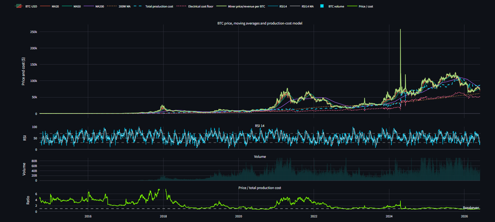
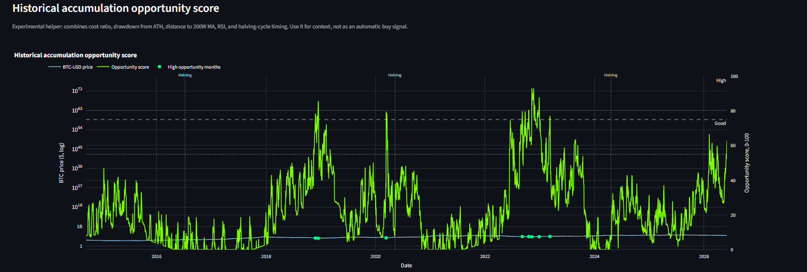

Market structure
BTC price history, moving averages, the 200-week MA, Bollinger Bands, RSI, and volume.
Local-first Bitcoin research tool
Compare Bitcoin market price with an editable mining production-cost model, network fundamentals, technical indicators, and historical cycle context.
Research and education only. No signal is financial advice.
Inside the dashboard
The dashboard brings market and network series into one adjustable research workspace. Change the assumptions, narrow the date window, and inspect how the relationship changes.
BTC price history, moving averages, the 200-week MA, Bollinger Bands, RSI, and volume.
Editable miner efficiency, electricity price, facility overhead, and electricity-share assumptions.
Hash rate, difficulty, block rewards, miner revenue, and fallback data sources for resilience.
A separate experimental opportunity score combines cost ratio, drawdown, RSI, trend, and cycle timing.
Actual dashboard views


Method, not certainty
There is no official Bitcoin production-cost series. This dashboard estimates it from public network data and user-controlled assumptions, then places the result beside price for research.
It is designed to make assumptions visible. Outputs are context, not predictions, guarantees, or automatic buy and sell signals.
Run it locally
Windows
Download the packaged executable from the latest GitHub release. The dashboard opens locally in your browser.
Download the .exePython
Clone the repository, install the requirements, and start Streamlit on port 8502.
pip install -r requirements.txt
streamlit run app.py --server.port 8502Optional support
The dashboard is public and free to inspect. Support is entirely optional.